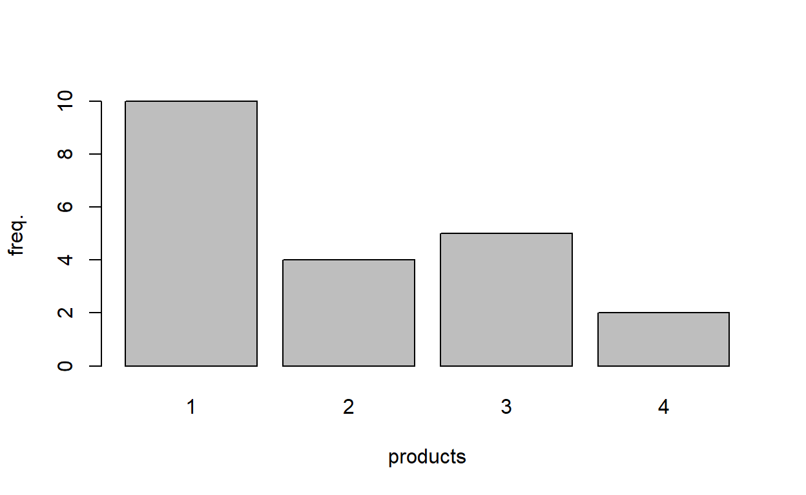
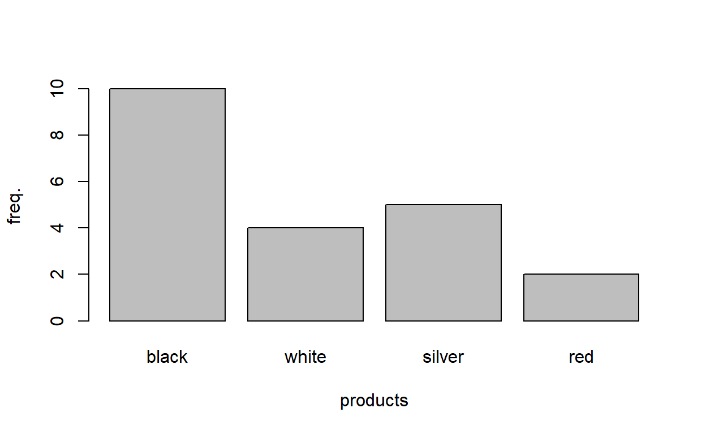

Overview
Learning objectives
In this section, we learn techniques and methods to summarize categorical or count data (and plot them). The section covers the following commands:
- tabulate data using
table factor: equipping categorical variables with value labels- draw bar and pie charts using, respectively,
barplotandpie
Case
In a small market research study, a sample \(n=21\) was interviewed what product the like best. Here are the answers of the customers.
| Answer | 1 | 2 | 4 | 1 | 3 | 1 | 1 | 3 | 1 | 1 | 2 |
[Table continued]
| 3 | 2 | 1 | 1 | 4 | 1 | 3 | 3 | 2 | 1 |
where the numerical codes
- 1 = black
- 2 = white
- 3 = silver
- 4 = red
Prerequisites
In this section, it is assumed that you know the following R commands:
c()(see Section X)- dd (see Section Y)
If your are not familiar with these commands, you are advised to learn the concepts prior to beginning with the current section.
Tabulating data
First, we read in the data of all \(n=21\) customers.
x <- c(1, 2, 4, 1, 3, 1, 1, 3, 1, 1, 2, 3, 2, 1, 1, 4, 1, 3, 3, 2, 1)We obtain the frequency distribution of variable x with the command table
table(x)x
1 2 3 4
10 4 5 2 The frequency distributions tells us that ten individuals like color 1 (black), four persons favor color 2 (white), and so on.
Factors
Generate a new variable
x_factor <- factor(x,
levels = c(1, 2, 3, 4),
labels = c("black", "white", "silver", "red")) The above call is equivalent writing everything on one single line, i.e.,
x_factor <- factor(x, levels = c(1, 2, 3, 4), labels = c("black", "white", "silver", "red")) However, the first call is more structured and thus easier to read. The command factor takes the three inputs
x: the variable that shall be equipped with value labels,levels: the numerical codes,labels: the labels that correspond to the numerical codes
The order of the numerical codes in levels must correspond with the ordering of the labels. Before we continue with our analysis, we print the new variable x_factor,
x_factor [1] black white red black silver black black silver black black
[11] white silver white black black red black silver silver white
[21] black
Levels: black white silver redWe easily recognize that in variable x_factor, the numerical codes (1, 2, 3, and 4) have been replaced by the value labels (the color names). The last line of the output lists the names of all labels.
The frequency distribution
table(x_factor) x_factor
black white silver red
10 4 5 2 Barplot
In the previous section, we learned how to use the command table to tabulate the data. For
table(x)x
1 2 3 4
10 4 5 2 Now, we
barplot(table(x))
This is a rather minimalistic barplot. In particular, it lacks axis labels. We add the label for the y-axis by defining the argument ylab = "freq."; hence, we get the following graph.
barplot(table(x), ylab = "freq.", xlab = "products")
| Code | 1 | 2 | 3 | 4 |
|---|---|---|---|---|
| Label | black | white | silver | red |
barplot(table(x), ylab = "freq.", xlab = "products",
names.arg = c("black", "white", "silver", "red"))
And now with colors
barplot(table(x), ylab = "freq.", xlab = "products",
names.arg = c("black", "white", "silver", "red"),
col = "deepskyblue")
see here for other colors
Customization
We can customized the barplot.
main = "My barplot": giving the plot the title My barplothoriz = TRUE: horizontal bars instead of vertical barsborder = "red": change color to borders of the bars to red- … (see
?barplotfor the details)
Your turn
Feel free to experiment with the commands table and barplot.
table(x)Quiz
Pie chart
pie(table(x))
Your turn
table(x)